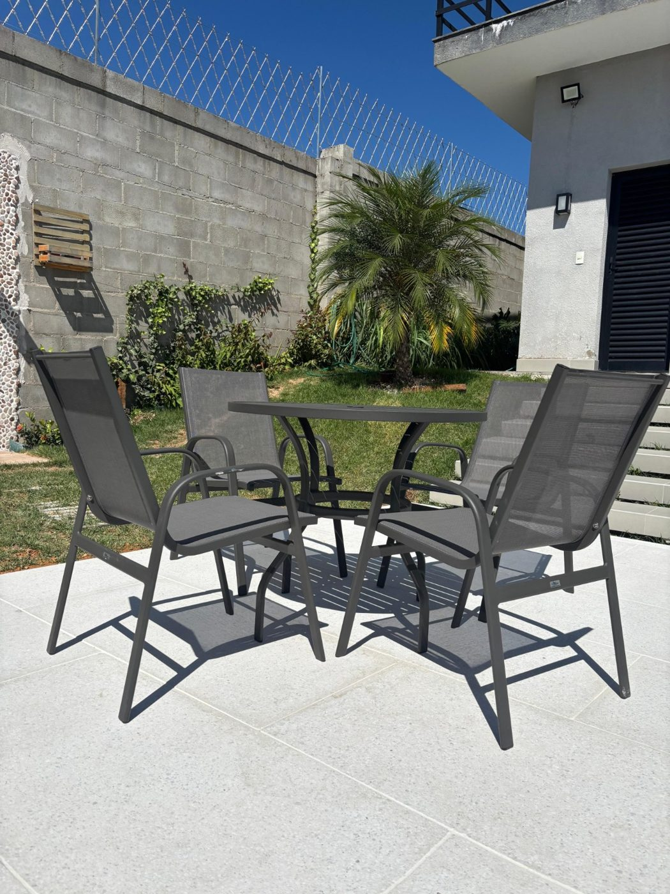
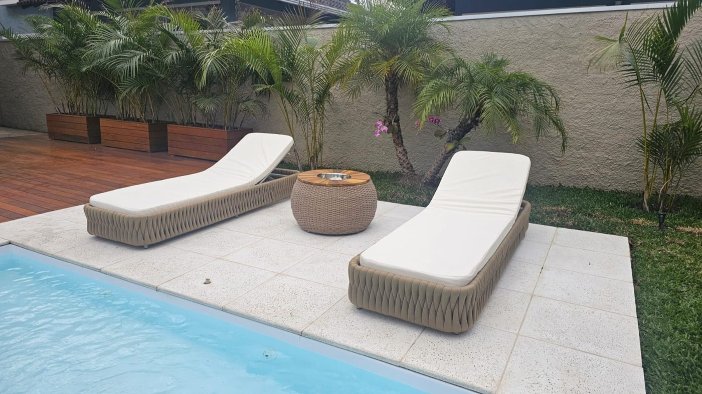
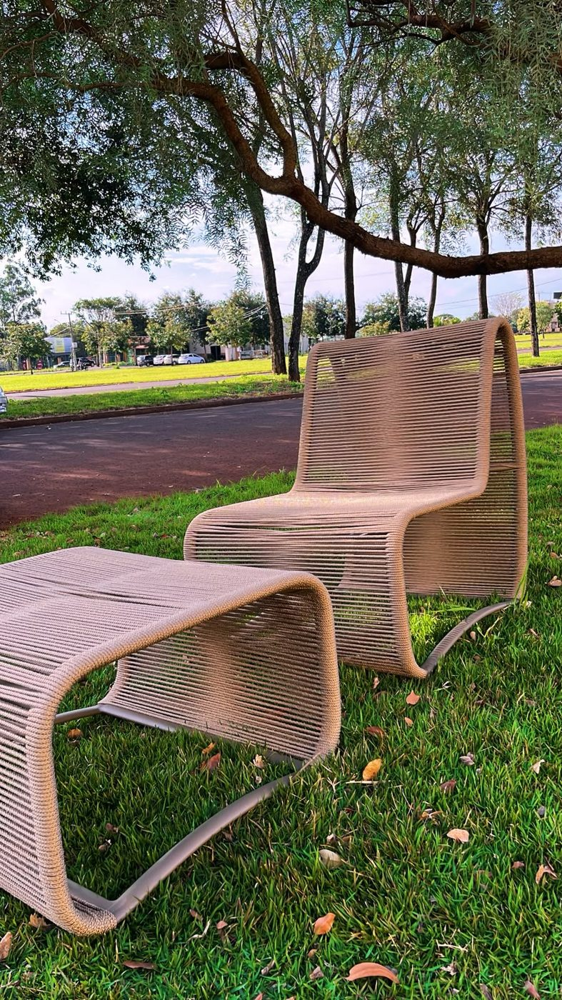
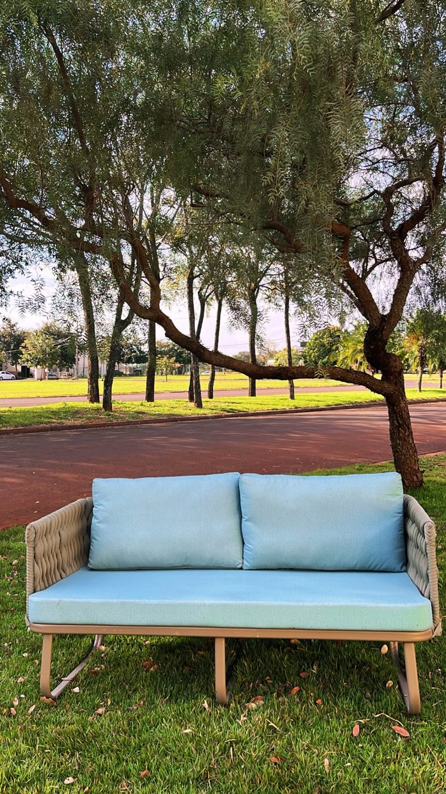
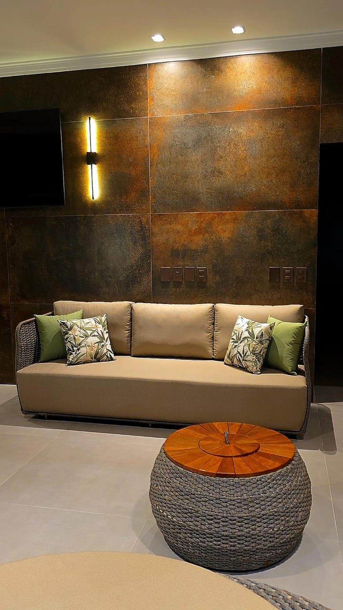
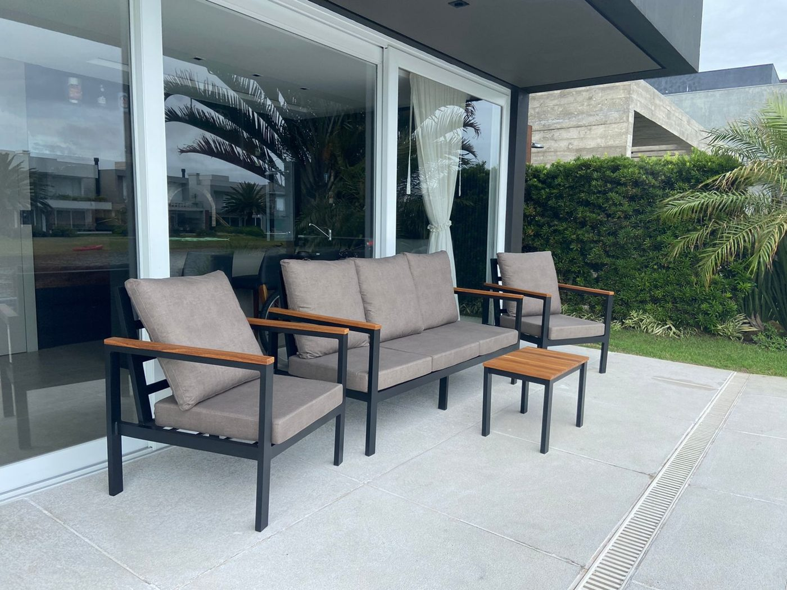
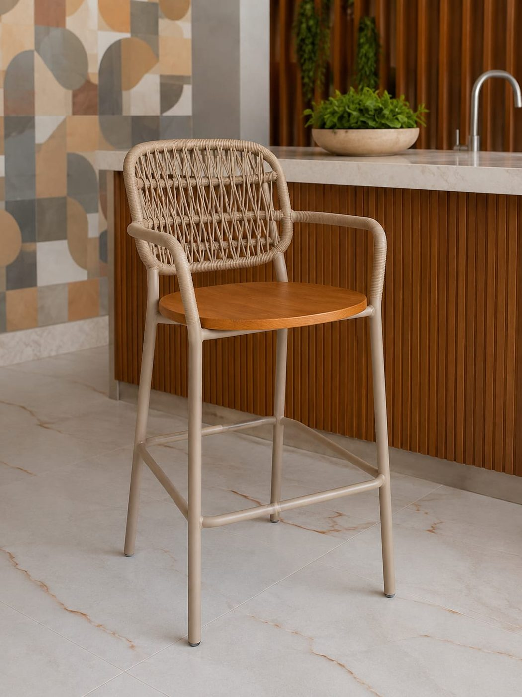
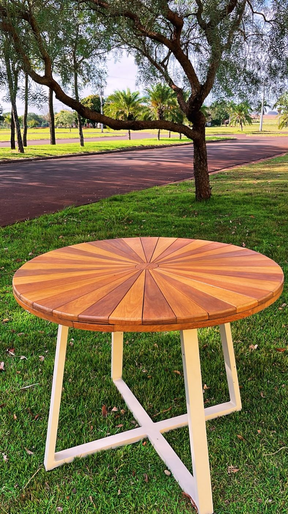

Tendências, feiras de decoração, arquitetura, paisagismo e viagens: referências para pensar a casa e a área externa.

DecoraçãoMedidas, altura, circulação e materiais para a área gourmet.

Datas sazonaisSombra, limpeza, tecidos e piscina: um roteiro para a temporada.

Nossos produtosTamanho, conforto, cor e posição para escolher bem.
DecoraçãoCamadas de luz, tom quente e segurança para varanda, piscina e área gourmet.

Produção artesanalEstrutura, trama e acabamento: o que há por trás de uma peça feita sob encomenda.

Feiras e mercadoAs vitrines do design mostram, dois anos antes, o que vai chegar às casas.
Tendências de coresComo combinar paletas na área externa, com regras simples de proporção.

Países e arquiteturaNatureza, água e arte integradas ao projeto, do Marina Bay Sands à varanda.
PaisagismoMedidas, materiais, plantas e cuidados para ter água no jardim.

TendênciasTexturas naturais, tons terrosos e ambientes integrados.
PaisagismoPlantas e vasos que combinam com ambientes externos.

DecoraçãoMedidas, circulação e peças multifuncionais.
DecoraçãoUm checklist para receber no Natal e no Réveillon sem correria.